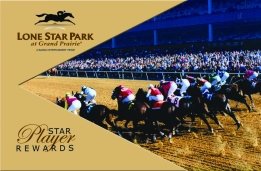
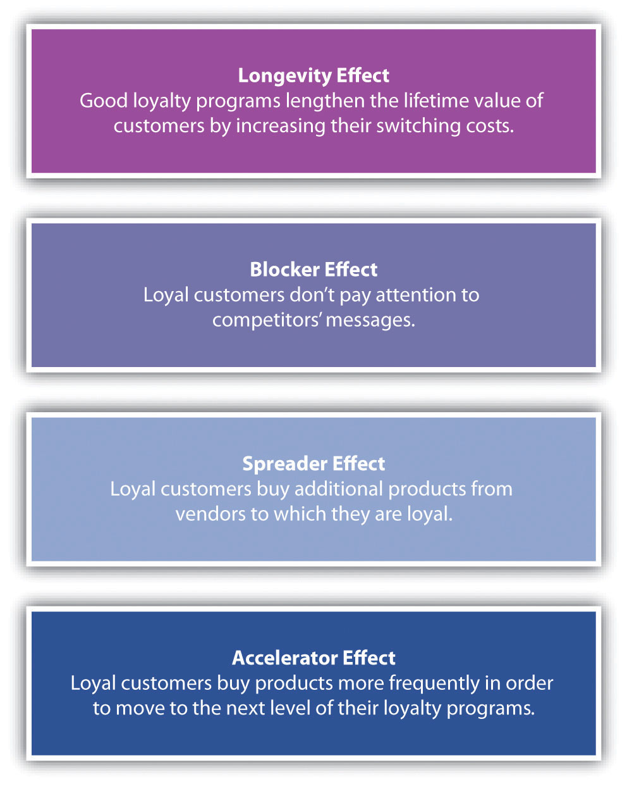

The marketing concept, described in Chapter 1 "What Is Marketing?", reminds us that the customer should be at the center of a firm’s activities and that the company that thrives is the one that serves customers’ needs better than the competition. Yet often it is the customer who is most adept at serving the customer’s needs. Consumers being able to take control of the marketing activities aimed at them is what customer empowermentProviding tools that enable customers to take control or influence marketing. is about. Today, technology is making it more possible for the customer to do exactly that. In a recent survey, the chief marketing officers of 250 top companies were asked about the key factors that influence the performance of their companies. The officers’ response? A company’s ability to interact and respond to its customers as well as empower them.Girish Ramani and V. Kumar, “Interaction Orientation and Firm Performance,” Journal of Marketing 72, no. 1 (2008): 27–41.
Research shows that customer empowerment is a function of three things: creating feedback channels that are easy and widely available, asking for and encouraging feedback about products, and enabling customers to participate in the design of products. Elsewhere, we discuss how customers can participate in the design of products, or offerings. In this chapter, we focus on those ubiquitous feedback channels, as well as strategies to solicit and encourage feedback.
Take JCPenney, for example. You might think that a company as large as JCPenney would be unable to give customers the ability to create their own types of shopping experiences—that standardizing the products and services they receive would be necessary. But JCPenney is an excellent example of how a firm can use the Internet and other technology to engage its customers and provide them with more control over the products and marketing communications they receive.
What JCPenney did was to ask women to join the Ambrielle community. By joining, women agreed to regularly participate in group discussions about products, review product samples and provide feedback directly to JCPenney, and other similar activities designed to give JCPenney insight into how to best serve women’s needs. In exchange, the women got the products they wanted, as well as early fashion information, and the satisfaction of having an impact. In this instance, JCPenney empowered their customers in a positive manner, with benefits for the customers and JCPenney.
If you are about to buy a new high-definition television, where do you go to learn about which one is best? Like many buyers, you probably turn to the Internet and visit sites such as Epinions.com or ConsumerSearch.com. Do you want to learn about the products of a specific retailer? More than 4,700 JCPenney products have been reviewed on Epinions.
The point is that consumers talk. They talk to each other, and they post their thoughts and opinions online. Word of mouthThe passing of information and opinions verbally., or the passing of information and opinions verbally, has a powerful influence on purchasing decisions. You rely on word of mouth when you register for classes. For example, you ask other students about which professors are best and how hard their classes are. If you have no one to ask, you can look at online sites such as ratemyprofessors.com.
BuzzWord of mouth that includes blogs, articles, and other forms of promotion. refers to the amount of word of mouth going on in a market. However, in addition to traditional word of mouth, buzz includes blogs, articles, and other information about an offering.
Companies try to create buzz about their products by sending press releases, holding events, offering free samples, writing blogs, or releasing podcasts. Some marketing managers actually spend time “trolling” the Web looking for postings about their products. If a negative posting appears to be a legitimate complaint, then the marketing manager can take action to fix the customer’s problem, and future complaints of the same nature can be avoided.
Some companies consider customer service to be a marketing channel, to the point that they train their customer service representatives to identify sales opportunities and pitch products. Dell, AOL, and others have been soundly criticized for taking this approach because customers felt that all they got was a sales pitch instead of a solution to their problem. Other companies consider customer service to be a marketing channel only to the extent that it generates positive word of mouth—do a great job with tough customers and encourage a positive review on a Web site. This latter perspective recognizes that when customers want service they don’t want to be sold, but it also recognizes that empowered customers can help market a product.
A marketing strategy being used increasingly often is influencer marketingTargeting individuals known to influence others so they will use their influence in the marketer’s favor., or targeting people known to influence others so that they will use their influence in the marketer’s favor. These influencers are the lead users we discussed in the chapter on designing offerings. If you spend some time on Procter & Gamble’s (P&G) Crest toothpaste Web site, you might be given a chance to complete a survey. (Someone who is very interested in dental care is more likely to take the survey.) The survey asks if you talk about dental care products, if you research such products, and if you influence others. These questions and questions like them are used to identify influencers. P&G then provides influencers with product samples and opportunities to participate in market research. The idea is that new offerings should be cocreated with influencers because they are more likely to be both lead users, early adopters of new offerings, and influence other people’s decisions to buy them.
That was the idea behind JCPenney’s Ambrielle lingerie community. Carros and other JCPenney employees on the Ambrielle marketing team devised a strategy of identifying women who would be willing to join a special community. A communityA form of a social group that centers its attention around a particular brand or product category., in the marketing sense, is a social group that centers its attention on a particular brand or product category. Another term for a community is a social networkA community or social group that centers its attention on a particular brand or product category.. The social network for Ambrielle lingerie is illustrated in Figure 14.1 "A Social Network".
Figure 14.1 A Social Network

Each circle represents a person in the social network, and the arrows represent the ties between them. You can see that some are JCPenney customers as represented by the arrows between the company (the star) and the individuals. Others are not, but are in contact with JCPenney customers.
Some communities are organized by companies. For example, Nike Plus is a community built around a sensor that tracks how far you run. The sensor can be inserted into Nike running shoes or clipped to competitors’ shoes, but the community was formed on the Nike Plus Web site. Here runners could use the input from the sensor to compete against each other, track their own performance and progress, and share experiences with each other. But many communities spring up naturally, without any help from a marketer. A local arts community is an example. In the case of Ambrielle, JCPenney created and manages the group; in the case of the Nike Plus, Nike manages the group in conjunction with its members.
Another difference between the Ambrielle community and Nike Plus is that the Ambrielle community is only composed of influencers. By asking a series of questions, JCPenney could identify which women were influencers and invite them to join. By contrast, anyone who owns a Nike Plus sensor can be a member of Nike Plus. Ambrielle influencers provide feedback about products to JCPenney and take an active role in designing the company’s offerings. In other words, the influencers participate regularly in marketing research activities. Another term for this type of community is an influencer panelA special type of community that participates regularly in marketing research activities..
Table 14.1 "Characteristics Used to Qualify the Members of Influencer Panels" lists the different characteristics used to qualify members of an influencer panel. Because JCPenney has also gathered lifestyle, demographic, and psychographic information about them, the firm has a fairly complete picture of each member. This information is invaluable because JCPenney can use the knowledge to segment the group more precisely. Thus, when the company test markets communications or offerings with the group, it can gain a better understanding of how well those efforts will work with different groups of consumers.
Table 14.1 Characteristics Used to Qualify the Members of Influencer Panels
| Characteristic | Definition |
|---|---|
| Active Influencer | Willing to tell others, but more important, others listen and act on the influencer’s opinion. |
| Interested | Has a greater intrinsic interest in the product category than the average user. |
| Heavy User | Actually uses or consumes the offering regularly, preferably more than the average user. |
| Loyal | Sticks to one brand when it works. Note, however, that this category could include someone who isn’t loyal because the right offering meeting his or her needs hasn’t yet been created. |
| Lead User | Willing to try new products and offer feedback. In some instances, it’s possible to modify an offering to suit an individual consumer; when it is, you want lead users to suggest the modifications so you can see how and why they do so. |
An influencer panel does not necessarily become a community. If the communication that occurs is only between the marketer and the individual members of the panel, no community forms. The members must communicate with one another for a community to exist. For example, a company may look for bloggers who regularly blog on subjects of importance to the company’s market. Procter & Gamble looks for bloggers who write on subjects of importance to moms. P&G then offers these bloggers samples of new Pampers products before these products reach the market, research reports on Pampers, and other things that might find a way into blogs. The goal is to influence the bloggers who already influence women. This strategy, though, does not require that P&G create a community through a Web site or other activity (although P&G does create influencer panels through other techniques).
As a marketing professional, how do you find influencers? The answer is that they have to be actively recruited. As you learned earlier in the chapter, P&G surveys people looking at its Web sites. If you answer the survey questions in a way that shows you meet the criteria listed in Table 14.1 "Characteristics Used to Qualify the Members of Influencer Panels", you might be asked to join a P&G panel. Another method is to ask a customer whose complaint you have just resolved to take a survey. After all, someone who has taken the time to complain might also be motivated to participate on a panel. Still another recruiting method is to send random surveys to households to identify people who would be good panel participants.
Once you create an influencer panel, you have to activate it. After all, influencers do not want to be singled out only to be ignored. However, marketing professionals should be able to answer the following three questions before they activate a panel:
As we have indicated, communities spring up naturally. Online, social networking siteA communication medium for communities, or social networks. like Facebook and LinkedIn are used to create communities. Everyone you are friends with on sites such as these are people that you already knew. The sites are simply the communication medium. What is interesting is that Facebook and other social networking sites can’t tell the difference between close friends and acquaintances. From a marketing perspective, since each tie or relationship is treated the same, social networking sites provide interesting ways to reach people. One, perhaps not so interesting way, is as a broadcast medium for advertising. A company targets consumers by placing ads on a person’s site based on what Facebook or LinkedIn knows about the person—just as ads are placed on a radio or television station and matched to certain audiences.
The more interesting way is by consumers sending other consumers links and other information. For example, when a marketer creates a Facebook page for an offering such as a movie, a community can form around the movie. Then if you join the group that loves the movie, Facebook notifies all of your friends that you are promoting the movie. A community such as this might not be as enduring as the Ambrielle or Nike Plus groups, but it serves its purpose—at least until the movie is old news and newer movies come out and get attention. When you become a “fan” of something like a movie, you are part of the buzz.
Marketers are looking at many ways to use Facebook and other social networking sites to create buzz. Facebook has a “gift-giving” application that allows people to give “gifts” to each other. The gifts are really just icons (pictures) within Facebook. Enter GiveReal, an online service that allows people to give one another real gifts online. GiveReal developed a promotion with Bombay Sapphire, a leading premium gin, and Facebook. The promotion allows Facebook users to give their friends electronic coupons (downloadable to a credit card) for mixed drinks that use Bombay Sapphire. These coupons can then be redeemed at restaurants and bars that accept credit cards.Anonymous, “Give Real; Leading Online Gifting Service GiveReal.com Partners with Bombay Sapphire to Serve Up the Perfect Summer Cocktail through the Web,” Marketing Weekly News, July 4, 2009, 225.
One result of social networking is viral marketingThe spread of the company’s message (like a virus) through a community., or the spread of the company’s message (like a computer virus) through the community. Some companies have enhanced the viral marketing of their offerings with interactive Web sites that might feature, say, a game built around an offering. Consumers then e-mail their friends with links to the game or Web site. Examples include the viral campaign by Nine Inch Nails for its concept album, Year Zero. An online alternate reality game was created involving characters and situations drawn from the music on the album. The album and game were so popular that HBO has even considered creating a series around the dark, futuristic tale told on the album.
Blogs are one form of online communication that helps spread viral marketing messages. As we noted earlier, companies can try to influence bloggers to blog on their products or company. Other companies blog directly, perhaps having a blog written by corporate marketing officers who “spin” the information. But blogs can be written by anyone. Blogs can serve as a “voice” for a community. For example, the chief executive of the National Thoroughbred Horseracing Association (the NASCAR of horseracing) writes a blog for the organization that is posted on its Web site. However, anyone can leave a comment on the blog. Blogs have become much more like dialogue in a town hall meeting than a one-way marketing message.
Figure 14.2

Ashton Kutcher was the first person to have over a million followers on Twitter.
Source: Wikimedia Commons.
Twitter is another application that facilitates viral marketing by enabling people to “follow” someone. When an organization or a person posts something on Twitter, the post—called a “tweet”—is sent as a text message to all followers of that organization or person. Ashton Kutcher made headlines by being the first person to collect a million followers. However, the first company to generate a million dollars in revenue through Twitter is probably Dell. Dell uses Twitter to communicate special deals via its tweets—offers that are extremely limited. Followers can then contact the company to place their orders for the products. Dell estimated that in 2009, it earned more than $3 million through Twitter.John C. Abell, “Dude—Dell’s Making Money off Twitter!” Wired, June 12, 2009, http://www.wired.com/epicenter/2009/06/dude-%E2%80%94-dells-making-money-off-twitter (accessed August 24, 2009).
Communities are not just a consumer phenomenon, nor are they a function of technology. In the B2B world, communities can be formalized into users’ groups. For example, the customers of Teradata, a data warehousing company, have formed a users group. Annually, the group holds a conference in which members talk about how they use Teradata’s products. So others users might learn from her company’s experience, Laura Carros, marketing manager, spoke at one of the conferences about how using CRM technology and Teradata’s data warehousing function helped JCPenney create the Ambrielle community.
Social mediaA catchall phrase for online channels of communication that build communities including social networking sites, blogs, podcasts, wikis, vlogs (video blogs), and other Internet-based applications that enable consumers to contribute content. is a catchall phrase for the online channels of communication that build communities. Social media includes social networking sites, blogs, podcasts, wikis, vlogs (video blogs), and other Internet-based applications that enable consumers to contribute content. Social media spending for marketing purposes doubled in 2008 and continued rise to through 2011 despite the poor economy. In fact, Forester, a respected research company, estimated spending to top over $3 billion in 2014!Adam Ostrow, “Social Media Marketing Spending to Hit $3.1 Billion by 2014,” Mashable, July 8, 2009, http://mashable.com/2009/07/08/social-media-marketing-growth/ (accessed October 10, 2011).
Customer communities form around social networks, which marketers can use to both promote offerings and gather market information. Companies create influencer panels that provide insight into effective offerings and provide word of mouth.
It’s 8:00 p.m. and you’re starving. You open the refrigerator and find a leftover chicken breast, half an onion, and some ketchup. But what can you do with these ingredients? You could search online for recipes that contain them, or you could post a question about what to do with them at a Web site like Kraft.com.
Companies like Kraft build Web sites such as Kraft.com in order to create the types of communities we discussed earlier. If you posted your question at Kraft.com, you might have an experience like one woman did—in 24 hours, 853 people viewed the question, and she had 22 answers to choose from. Another question had 3,341 viewers over 10 days. Why has Kraft’s Web marketing team worked so hard to create an environment in which people can do this?
One important reason is loyalty. Kraft wants loyal customers—customers who buy Kraft products instead of other brands at every opportunity, who recommend its products to their friends, and are willing to pay a little more to get Kraft quality. Early research on loyalty showed that loyal customers were less expensive to market to, more willing to pay a premium for a particular brand, more willing to try new products under the brand name, more likely to recommend the brand to their friends, and more willing to overlook a problem related to the brand.Fred Reicheld and Thomas Teal, The Loyalty Effect: The Hidden Force Behind Growth, Profits and Lasting Value (Boston: Harvard Business Press, 2001). That said, more recent research shows that the benefits that come from loyal customers are not automatic and that it takes careful management for those benefits to be sustained.Werner J. Reinartz and V. Kumar, “The Impact of Customer Relationship Characteristics on Profitable Lifetime Duration,” Journal of Marketing 67, no. 1 (2003): 77–96.
Loyalty has two dimensions. One dimension of loyalty is behavioral loyaltyThe degree to which a customer habitually buys a product and does not respond to competitors’ offerings., meaning that the customer buys the product regularly and does not respond to competitors’ offerings. The second dimension is attitudinal loyaltyThe degree to which a customer prefers or likes a brand., which is the degree to which the customer prefers or likes the brand.
Most marketers would be happy with behavioral loyalty because it does, after all, result in sales. Yet behavioral loyalty doesn’t mean that the customer is immune to your competitors’ offerings. Nor does it mean the customer is willing to pay more for your brand. For example, a business person might regularly book trips on American Airlines because it flies to the one or two destinations the traveler has to visit regularly. But a lower price on another airline or one scheduled at a more convenient time might persuade the flier to switch to another carrier.
Habitual purchases are a form of behavioral loyalty. Comparison shopping takes time and effort, so buyers are often willing to forego looking for substitute products. Habitual purchases are commonly made for low-involvement offerings. You might regularly purchase a Coke at a drive-thru restaurant near your house rather than take the time, energy, and gasoline to look for a Coke that’s cheaper. In this instance, you are displaying behavioral loyalty to the restaurant simply because it is convenient.
Marketers engage in many activities to both encourage and discourage behavioral loyalty. Loyalty programs, such as an airline offering travelers frequent-flier miles, can encourage behavioral loyalty. But coupons and other special price promotions can break behavioral loyalty patterns. We’ll discuss loyalty programs in more detail later in this chapter.
As we explained, attitudinal loyalty refers to how much someone likes a brand and is willing to act on that preference. Keep in mind, however, that a person’s willingness to act on a preference doesn’t necessarily mean she will purchase your product: If you sell Ferraris, and she is unemployed, she might be unable to afford one.
Cause-related marketing, which we discussed in Chapter 12 "Public Relations, Social Media, and Sponsorships", can foster attitudinal loyalty among a company’s community of customer. Companies that engage in cause-related marketingWhen a company supports a nonprofit organization in some way in order to generate positive public relations. choose causes that are important to the customer communities in which they operate. American Airlines sponsors the Susan G. Komen Foundation, an organization that is working to cure breast cancer. KitchenAid sponsors Cook for the Cure, which also benefits the foundation. Both companies support breast cancer awareness because the cause is important to their female customers.
Figure 14.3
American Airlines is a Lifetime Promise Partner, a program designed to support breast cancer awareness and the Susan G. Komen Foundation. The company has painted Komen’s signature pink ribbon on planes as a way to support the foundation. Companies support charities that are important to the communities in which they operate.
Source: American Airlines, used with permission.
Note, however, that cause-related marketing should be sincere. You can probably quickly tell when a person or organization is insincere. So can your customers. Sincerity also breeds trust. For example, when Eunice Azzani volunteered for the San Francisco AIDS Foundation, she did so because the cause was important to her and Korn/Ferry International, the executive search firm for which she is a managing director. While working for the cause, Azzani met executives with Mervyn’s, Wells Fargo, and other major corporations who later engaged her company to conduct executive searches. They knew they could trust her to do high-quality work and that she was sincere about her place in the community.Steven Van Yoder, “Cause-Related Marketing,” http://www.streetdirectory.com/travel_guide/5529/marketing/cause_related_marketing.html (accessed October 10, 2008).
Of course, there are many other methods of building attitudinal loyalty. As we mentioned, advertising can create feelings for a brand, as can sponsoring a sports team or cultural event. In the next section, we discuss loyalty programs, one way that companies try to manage both affective and behavioral dimensions of loyalty.
Loyalty programsMarketing efforts that reward the frequent purchase and consumption of an offering. are marketing efforts that reward a person or organization for frequent purchases and the consumption of offerings. For example, Lone Star Park’s Star Player Rewards program awards members points for each dollar they spend at the track. The more points they earn, the better the prize is for which they can redeem their points.
Figure 14.4
Lone Star Park is a horseracing track in Grand Prairie, Texas. The park rewards frequent attendees through its Star Player Rewards program, which tracks members’ purchases and bets. Members can also compete in special contests and participate in special events, such as being able to meet famous jockeys.
Source: Lone Star Park, used with permission.
The data a firm collects from a loyalty program can be very useful in terms of designing and improving the company’s offerings. When members initially sign up for a loyalty program, they provide a great deal of demographic information to the organization. Their behavior can then be tracked as well. For example, Lone Star Park can determine who sits in what section of the track by what tickets members purchase, as well as where they purchase their refreshments or place their bets. The track can also determine members’ preferences for food and drink products or services such as betting clerks and betting machines. When the track has nonracing events, such as a concert, the events can be promoted to Star Players. Depending on how the members respond, additional offers can be made, or not made, to them.
Lone Star Park might also team up to create an offering with American Airlines. For example, the track and the airline could compare customer lists and determine which Star Players members are also members of American’s AAdvantage frequent-flier program. These individuals could then be offered discounts on trips to Louisville, Kentucky, where the Kentucky Derby is held. Such an offer is called cross-promotion marketingA method in which two or more groups act together to reach potential customers.. A cross-promotion can be used to introduce new marketing members to a community; in this case, Lone Star Park is introducing American to the horseracing community. The cross-promotion creates credibility for the new member, just as you are more likely to accept a recommendation from a friend.
Figure 14.5
The horse that came in second in this Lone Star Park race is owned by one of the authors of this textbook. Note the advertisers in the background of the photo. The advertisers want to reach the same community as Lone Star Park, and they want their products to become the products of choice for that community. As you can tell, advertising at the track isn’t just about reaching eyeballs—it’s about being viewed as a member of the community, which could result in greater brand loyalty among the community’s customers.
When loyalty programs work, they result in one or more of the four effects of loyalty: the blocker effect, the spreader effect, the accelerator effect, and the longevity effect. We’ll start by describing the longevity effect.
Figure 14.6 The Positive Effects of Loyalty Programs
The longevity effectThe process of lengthening a customer’s lifetime value over time. is lengthening the lifetime value of a customer. We discussed customer lifetime value (CLV) in earlier chapters. One result of a good loyalty program is that your buyers remain your customers for longer. Because a loyalty company has better information about its customers, it can create offerings that are more valuable to them and keep them coming back. Consider a loyalty program aimed at customers as they progress through their life stages. A grocery store might send diaper coupons to the mother of a new baby and then, five years later, send the mother coupons for items she can put in her child’s school lunches.
Loyalty programs also affect the longevity of customers by increasing their switching costs. Switching costsThe costs associated with moving to a new supplier of an offering. are the costs associated with moving to a new supplier. For example, if you are a member of a frequent-flier program, you might put up with some inconveniences rather than switching to another airline. So, if you are a member of American’s AAdvantage program, you might continue to fly American even though it cancelled one of your flights, made you sit on a plane on the ground for two hours, and caused you to miss an important meeting. Rather than starting over with Continental’s Elite Pass program, you might be inclined to continue to book your flights on American so you can take a free trip to Europe sooner.
The blocker effect is related to switching costs. The blocker effectA loyalty program that results in members blocking out marketing communications from competitors. works this way: The personal value equation of a loyalty program member is enhanced because he or she doesn’t need to spend any time and effort shopping around. And because there is no shopping around, there is no need for the member to be perceptive to competitors’ marketing communications. In other words, the member of the program “blocks” them out. Furthermore, the member is less deal-proneWilling to succumb to a special offer or lower price., or willing to succumb to a special offer or lower price from a competitor.
The blocker effect can be a function of switching costs—the costs of shopping around as well as the hassles of having to start a new program over. However, the effect can also be a function of relevance. Because the loyalty marketer has both information on whom the buyer is and data on what the buyer has already responded to, more relevant communications can be created and aimed at the buyer. In addition, because belonging to the program has value, any communication related to the program are already more relevant to the buyer.
The spreader effectA loyalty program that results in buyers being more likely to try related products offered by a marketer. refers to the fact that members of a loyalty program are more likely to try related products offered by the marketer. For example, an American Airlines AAdvantage member who also joins the company’s Admiral’s Club airport lounge creates additional revenue for the airline, as a does the member’s purchase of a family vacation through American’s Vacation services.
The spreader effect becomes even more pronounced when a cross-promotion is added to the mix. Earlier we mentioned Lone Star Park might team with American to offer a trip package to the Kentucky Derby. Another example is Citibank offering you AAdvantage miles if you get a Citibank Visa card through American’s AAdvantage program. Cross-promotions such as these encourage loyalty program members to try even more products from more producers.
When rats running in a maze get closer to the cheese, they speed up. Like rats in a maze, consumers speed up, or accelerate, purchases when they are about to reach a higher award level in a loyalty program, called the accelerator effectThe effect of a loyalty program that, as a consumer approaches the next level of benefits, the rate of consumer’s purchases increases. of a loyalty program. In American’s AAdvantage program, for example, a member gets “Platinum” status after flying sixty flights or fifty thousand miles. Platinum members get special awards, like more frequent upgrades to first class, boarding ahead of everyone else, not having to pay for luggage and other fees, and double mileage toward free flights. Someone who has fifty flights and just needs ten more to become Platinum will start to fly American more frequently until the Platinum level is reached. Then, American hopes that the other effects (blocker, spreader, etc.) will occur.
Companies can capitalize on the accelerator effect by making it easy for members to track their progress and notifying them when they are close to reaching subsequent levels. American helps its Advantage fliers track their progress by sending them monthly updates on their levels. Couple such a notification with a special offer, and a company is likely to see even greater acceleration. The accelerator effect can also be used with promotions that create short-term, loyal behavior. Pepsi created a promotion with Amazon in which purchasers could accumulate points toward free music downloads. The promotion, launched with a Justin Timberlake Super Bowl ad, was a knock-off of Coca-Cola’s MyCokeRewards.com. Although they weren’t formal loyalty programs, both promotions led to an accelerator effect as customers got close to the award levels they needed to redeem prizes.
Just having a loyalty program is no guarantee of success, though. Eight studies of more than a dozen grocery-store loyalty programs in the United States and Europe showed that five programs had no impact on the loyalty of customers, two increased sales but not profits, two had mixed results, and five had positive results.John F. Tanner, Jr., and Deepa Morris, “Customer Empowerment” (white paper published by BPT Partners, LLC, March 2009). There are, however, several characteristics of loyalty programs that can make them effective, each of which is discussed next.
The first characteristic of an effective loyalty program is performance. No loyalty program can overcome a company’s poor performance. Even the most loyal buyer can put up with subpar performance for only so long.
Responsiveness is how well a company can take customer information (such as complaints) and alter what they do to satisfy the customer. Loyal customers are more willing to complete surveys and participate in market research, but they expect companies to use the information wisely. For example, when customers complain, they expect their problems to be fixed and the company to use the information so that the same problems don’t reoccur. Likewise, the members of influencer panels expect to be listened to. If you ignore their input, you are likely to alienate them, causing them to switch other brands.
A company’s responsiveness—or lack thereof—also becomes evident to buyers when they spot a better offer. Precisely at that moment, they realize that the company that created the better offer was more responsive and worked harder to meet their needs.
Loyal customers are like sports fans—they wear their “team’s” colors. That’s why loyalty programs have names that sound prestigious, like Continental’s “Elite Pass” program or American’s “Executive Platinum” program. Loyal customers also want to be recognized for their loyalty. Hampton Inn, which is part of the Hilton family of hotels, is one company that could do a better of job of recognizing its customers—literally. One of the authors stays regularly at the same Hampton Inn, only to be greeted every time on arrival with the question, “Is this your first stay with us?” The author is not only a regular guest at that hotel but a member of Hilton Honors, the hotel’s loyalty program. But apparently the Hampton Inn’s reservation system doesn’t provide that information to its front desk clerks. If you fail to recognize customers who are loyal, you are essentially telling them that their business isn’t that important to you.
What are the benefits of being loyal? A loyalty program should make those benefits clear. For example, Continental Airlines has a special boarding lane for its Elite Pass members. Travelers who are not Elite Pass members can easily see the special treatment members receive. If the elements of scarcity and status can be created by a loyalty program, the benefits of belonging to it will be obvious to customers.
Finally, marketers who can put loyal customers together with other loyal customers are likely to build a community around the common experience of consumption. At Lone Star Park or American Airlines, common consumption is obvious—people are actually together. Building a community in which people don’t actually consume goods and services together can be a bit more difficult, but recall that Kraft has done so with its online presence. Members of Kraft.com still share their experiences, their recipes, their questions, and their answers, thereby creating a sense of “we’re in this together.” Some of the postings might be related directly to Kraft products, whereas others might only be indirectly related. Nonetheless, they all provide Kraft with insight into what its customers are thinking. Meanwhile, its customers become more loyal as they participate on the Web site.
Keep in mind that a loyalty program isn’t necessary to create loyalty. Lexus doesn’t have a formal loyalty program. Yet studies show that Lexus owners are the most loyal luxury car buyers. Over half of all Lexus owners buy another Lexus. (The brand’s slogan is “Once a Lexus buyer, always a Lexus buyer.”) By contrast, Mercedes-Benz has a loyalty program, but only 40 percent of its buyers purchase another Mercedes.Nelson Ireson, “Lexus First in Owner Loyalty Survey, Saab Last,” September 3, 2008, http://www.motorauthority.com/jd-power-lexus-first-in-luxury-owner-loyalty-saab-last.html (accessed July 13, 2009).
A company can also offer its customers loyalty benefits that are not a part of a formal loyalty program. For example, Mercedes-Benz gives loyal buyers an opportunity to suggest new features via a contest, for which there is no prize other than the recognition the winner gets because his idea was selected. And like many other car manufacturers, Mercedes offers owners special trade-in deals. The challenge with loyalty promotions that lie outside loyalty programs is collecting the information marketers need to target customers.
Customer loyalty is both behavioral and attitudinal. Habitual purchases are a form of behavioral loyalty. Cause-related marketing can foster attitudinal loyalty among a company’s community of customers, as can loyalty programs. Loyalty programs can have four positive effects: They can increase the longevity, or lifetime value, of customers; block competitors’ marketing efforts; encourage customers to buy related offerings; and accelerate their purchases. Loyalty programs don’t automatically create loyalty among customers, though. Loyalty is created when a company performs well, responds to its customers, identifies its loyal customers, makes the benefits of its loyalty program transparent (obvious), and when the firm builds a community among its customers.
What comes to mind when you hear someone say, “A satisfied customer”? Perhaps it is an image of someone smiling with the pride of knowing he got a good deal. Or perhaps it is the childlike look of happiness someone exhibits after purchasing a new pair of shoes that are just the right color. Whatever your picture of a satisfied customer is, customer satisfactionThe feeling that results when an offering meets a consumer’s expectations. is typically defined as the feeling that a person experiences when an offering meets his or her expectations. When an offering meets the customer’s expectations, the customer is satisfied.
Improving customer satisfaction is a goal sought by many businesses. In fact, some companies evaluate their salespeople based on how well they satisfy their customers; in other words, not only must the salespeople hit their sales targets, they have to do so in ways that satisfy customers. Teradata is one company that pays its salespeople bonuses if they meet their customer satisfaction goals.
Customer satisfaction scores have been relatively stable for the past few years as illustrated in Table 14.2 "Industry-Average Customer Satisfaction Scores, 2000–2010". You might think that if increasing the satisfaction of customers were, indeed, the goal of businesses, the scores should show a steady increase. Why don’t they? Maybe it’s because just satisfying your customers is a minimal level of performance. Clearly customer satisfaction is important. However, it isn’t a good predictor of a customer’s future purchases or brand loyalty. For example, one study of customer satisfaction examined car buyers. Although the buyers rated their satisfaction levels with their purchases 90 percent or higher, only 40 percent of them purchased the same brand of car the next time around.Raphaelle Lambert-Pandraud, Gilles Laurent, and Eric Lapersonne, “Repeat Purchasing of New Automobiles by Older Consumers: Empirical Evidence and Interpretations,” Journal of Marketing 69, no. 2 (2005): 97–106.
Table 14.2 Industry-Average Customer Satisfaction Scores, 2000–2010
| 2000 | 2001 | 2002 | 2003 | 2004 | 2005 | 2006 | 2007 | 2008 | 2009 | 2010 | |
|---|---|---|---|---|---|---|---|---|---|---|---|
| Appliances | 85 | 82 | 82 | 81 | 82 | 80 | 81 | 82 | 80 | 82 | 81 |
| Computers | 72 | 74 | 71 | 71 | 72 | 74 | 77 | 75 | 74 | 78 | 78 |
| Electronics | 83 | 81 | 81 | 84 | 82 | 81 | 80 | 83 | 83 | 85 | 85 |
| Cars | 80 | 80 | 80 | 80 | 79 | 80 | 81 | 82 | 82 | 82 | 83 |
Source: American Customer Satisfaction Index, http://www.theacsi.org (accessed October 10, 2011).
Keep in mind, though, that satisfaction scores are a function of what the customer expected as well as what the company delivered. So the flat scores in Table 14.2 "Industry-Average Customer Satisfaction Scores, 2000–2010" reflect rising customer expectations as well as improved products. In other words, the better products get, the more it takes to satisfy consumers.
There is also a downside to continuously spending more to satisfy your customers. Recent research shows that firms that do so can experience higher sales revenues. However, after the additional spending costs are factored in, the net profits that result are sometimes marginal or even negative. Nonetheless, satisfaction is not unimportant. A company’s performance on key factors is critical both in terms of the loyalty and satisfaction it generates among its customers.Gustavo Souki and Cid G. Filho, “Perceived Quality, Satisfaction and Customer Loyalty: An Empirical Study in the Mobile Phones Sector in Brazil,” International Journal of Internet and Enterprise Management 5, no. 4 (2008): 298–314.
So what or how much should you do to improve the satisfaction of your customer? If customer satisfaction can be defined as the feeling a person experiences when an offering meets his or her expectations, then there are two critical ways to improve customer satisfaction. The first is to establish appropriate expectations in the minds of customers. The second is to deliver on those expectations.
We know that dissatisfied customers are likely to tell many more friends about their negative experiences than satisfied customers are about good experiences. Why? Because there’s more drama in unmet expectations. A story about met expectations—telling a friend about a night out that was average, for example—is boring. Jan Carlson, a former Scandinavian Airlines executive, was famous for promoting the concept of “delighted” customers. Carlson’s idea was that delighting customers by overexceeding their expectations should result in both repeat business and positive word of mouth for a firm. The fact that stories about plain old satisfaction are boring is also why influencer communities, such as JCPenney’s Ambrielle community, are so important. Influencers have new offerings to talk about, which are interesting topics, and other buyers want to know their opinions.
Establishing appropriate expectations in the minds customers is a function of the prepurchase communications the seller has with them. If you set the expectations too low, people won’t buy your offering. But if you set the expectations too high, you run the risk that your buyers will be dissatisfied. A common saying in business is “underpromise and overdeliver.” In other words, set consumers’ expectations a bit low, and then exceed those expectations in order to create delighted customers who are enthusiastic about your product. A seller hopes that enthusiastic customers will tell their friends about the seller’s offering, spreading lots of positive word of mouth about it.
One customer satisfaction strategy that grew out of Carlson’s idea of delighting customers is to empower customer-facing personnel. Customer-facing personnel are employees that meet and interact with customers. In a hotel, this might include desk clerks, housekeepers, bellman, and other staff. Empowering these employees to drop what they’re doing in order to do something special for a customer, for example, can certainly delight customers. In some organizations, employees are even given a budget for such activities.
Ritz-Carlton employees each have an annual budget that can be spent on customer service activities, such as paying for dry cleaning if a customer spilled red wine on a dress in the hotel’s restaurant. Sewell Cadillac is famous for how its employees serve its customers. An employee will even pick up a customer up on a Sunday if a Sewell-purchased car breaks down. Other dealers might delegate such a service to another company, but at Sewell, the same salesperson who sold the car might be the person who handles such a task. To Sewell, customer service is too important to trust to another company—a company that perhaps won’t feel the same sense of urgency to keep car buyers as satisfied as Sewell does.
Companies like Ritz-Carlton also monitor Twitter and other social media so that any problems can be identified in real time. For example, one newlywed tweeted that the view outside her window of another wall was no way to spend a honeymoon. A Ritz-Carlton employee caught the tweet and employees at the hotel responded with a room upgrade.
Empowerment is more than simply a budget and a job description—frontline employees also need customer skills. Companies like Ritz-Carlton and Sewell spend a great deal of time and effort to ensure that employees with customer contact responsibilities are trained and prepared to handle small and large challenges with equal aplomb.
Another customer satisfaction strategy involves offering customers warranties and guarantees. Warranties serve as an agreement that the product will perform as promised or some form of restitution will be made to the customer. Customers who are risk-averse find warranties reassuring.
One form of dissatisfaction is postpurchase dissonanceA situation in which consumers rethink their decisions after purchasing products and wonder if they made the best decision., which we described in Chapter 3 "Consumer Behavior: How People Make Buying Decisions". Recall that it is also called buyer’s remorse. Postpurchase dissonance is more likely to occur when an expensive product is purchased, the buyer purchases it infrequently and has little experience with it, and there is a perception that it is a high-risk purchase. Many marketers address postpurchase dissonance by providing their customers with reassuring communications. For example, a boat dealer might send a buyer a letter that expresses the dealer’s commitment to service the boat and that also reminds the buyer of all the terrific reasons he or she purchased it. Alternatively, the dealer could have the salesperson who sold the boat telephone the buyer to answer any questions he or she might have after owning and operating the boat for a couple of weeks.
To measure customer satisfaction, you need to able to understanding what creates it. Just asking customers, “Are you satisfied?” won’t tell you much. Yet many companies often measure the satisfaction of their customers on the basis of only a few questions: “How satisfied were you today?” “Would you recommend us to your friends?” and “Do you intend to visit us again?”
Effective customer satisfaction measures have several components. The two general components are the customer’s expectations and whether the organization performed well enough to meet them. A third component is the degree of satisfaction, or to put it in terms we’ve used to describe exceptional performance, is the customer delighted?
To figure out if a customer’s expectations were met and they are delighted, more detail is usually required. Companies might break the offering into major components and ask how satisfied customers were with each. For example, a restaurant might ask the following:
These questions assume that each aspect of the service is equally important to the customer. However, some surveys ask customers to rate how important they are. Other surveys simply “weight,” or score, questions so that aspects that are known to be more important to customers have a greater impact on the overall satisfaction score. For example, a restaurant might find that prompt service, good taste, and large portions are the only three factors that usually determine customers’ overall satisfaction. In that case, the survey can be shortened considerably. At the same time, however, space should be left on the survey so customers can add any additional information that could yield important insight. This information can be used to find out if there are customer service problems that a firm wasn’t aware of or if the preferences of consumers in general are changing.
You will still find customer satisfaction survey cards that just ask, “How satisfied were you today?” “Would you recommend us to your friends?” and “Do you intend to visit us again?” The information obtained from these surveys can still be useful if it’s paired with a more comprehensive measurement program. For instance, a sample of customers could be given the opportunity to provide more detailed information via another survey and the two surveys could be compared. Such a comparison can help the company pinpoint aspects that need improvement. In addition, the company has given every customer an opportunity to provide input, which is an important part of any empowerment strategy.
When buyers want to complain about products or companies, they have many ways to do so. They can complain to the companies they’re upset with, tell their friends, or broadcast their concerns on the Internet. People who use every Internet site possible to bash a company are called verbal terrorists. The term was coined by Paul Greenberg, a marketing analyst who authored the wildly popular book CRM at the Speed of Light.
Should companies worry about verbal terrorists? Perhaps so. A recent study indicates that customer satisfaction scores could be less important to a firm’s success or failure than the number of complaints its gets.X. Lou and C. Homburg, “Satisfaction, Complaint, and the Stock Value Gap,” Journal of Marketing 72, no. 3 (2008): 29–43. To measure the tradeoff between the two, customer satisfaction guru Fred Reicheld devised something called the net promoter score. The net promoter score is the number of recommenders an offering has minus the number of complainers.Fred Reicheld, The Ultimate Question: Driving Good Profits and True Growth (Boston: Harvard Business Press, 2006). The more positive the score, the better the company’s performance. According to another recent study, a company with fewer complaints is also more likely to have better financial performance.
Studies also show that if a company can resolve a customer’s complaint well, then the customer’s attitude toward the company is improved, possibly even beyond the level of his or her original satisfaction. Some experts have argued, perhaps jokingly, that if this is the case, a good strategy might be to make customers mad and then do a good job of resolving their problems. Practically speaking, though, the best practice is to perform at or beyond customer expectations so fewer complaints will be received in the first place.
Customers will complain, though, no matter how hard firms try to meet or exceed their expectations. Sometimes, the complaint is in the form of a suggestion and simply reflects an opportunity to improve the experience. In other instances, the complaint represents a service or product failure.
When a complaint is made, the process for responding to it is as important as the outcome. And consumers judge companies as much for whether their response processes seem fair as whether they got what they wanted. For that reason, some companies create customer service departments with specially trained personnel who can react to complaints. Other companies invest heavily in preparing all customer-facing personnel to respond to complaints. Still other companies outsource their customer service. When the service is technical, marketers sometimes outsource the resolution of complaints to companies that specialize in providing technical service. Computer help lines are an example. Technical-support companies often service the computer help lines of multiple manufacturers. A company that outsources its service nonetheless has to make sure that customer complaints are handled as diligently as possible. Otherwise, customers will be left with a poor impression.
A good customer complaint handling process involves the steps listed below. Note that one step is to acknowledge the customer’s feelings. A customer who is angry or upset due to a failure does not want to be patronized or have his or her problems taken lightly. The situation is important to the customer and should be important to the person listening and responding to the complaint.
Note that the complaint-resolution process involves communicating that process and gaining agreement on a solution, even if the customer sometimes might not like the outcome. He or she still needs to know what to expect.
Finally, the complaint process includes recording the complaint. We stated earlier that a firm’s best strategy is to perform at or beyond the customer’s expectations so as to minimize the number of complaints it receives in the first place. Analyzing your company’s complaints can help you identify weak points in a service process or design flaws in a product, as well as potential miscommunications that are raising customer’ expectations unreasonably. To conduct this analysis, however, you need a complete record of the complaints made.
A complaint record should reflect the main reason an offering failed. Typically, the failure can be attributed to one (or more) of the following four gaps:Michael Levy and Barton Weitz, Retailing Management, 7th ed. (Burr Ridge, IL: McGraw-Hill, 2009.)
You can attribute the complaints your company receives to one of the four gaps and then use the information to figure out what must be done to fix the problem, assuming you have one. If the problem is overstating the performance, then perhaps your firm’s marketing promotions materials should be reviewed. If it appears that the offering is simply not meeting the needs of your customers, then more work should be done to identify exactly what they are. If your firm is aware of the needs of its customers but there is a gap between their requirements and the standards set for your firm’s performance, then standards should be reviewed. Finally, your company’s processes should be examined to ensure that standards are being met.
When the Smokey Bones chain of barbecue restaurants (owned by Darden Restaurants) noticed falling profits, managers cut costs by eliminating some items from the menu. Unfortunately, these were the items that made the chain unique; once they were gone, there was nothing distinctive about the chain’s offerings. When customers complained, servers replied, “Yes, a lot of people have complained that those products are no longer available.” But apparently, there was no process or way to get those complaints to register with the company’s management. As a result, the company didn’t realize why it was losing customers, and its profits continued to spiral downward. Many locations were closed and the company filed for bankruptcy.
Keep in mind that the complaint handling process itself is subject to complaints. As we mentioned, customers want a process that’s fair, even if the outcome isn’t what they hoped for. Consequently, monitoring your firm’s customer satisfaction levels also means you must monitor how satisfied customers are with how their complaints were handled.
Measuring customer satisfaction is an important element of customer empowerment. But satisfaction alone is a minimal level of acceptable performance. It means that the customer’s expectations were met. Getting positive word of mouth requires exceeding those expectations. To minimize the number of complaints a company needs an effective process of both handling complaints and understanding their causes so any problems can be corrected. Because the complaint process itself is subject to complaints, monitoring your firm’s customer satisfaction levels also means you must monitor how satisfied customers are with your company’s complaint handling system.
You are about to graduate and move to another city to start a new job. Your employer is paying for your moving expenses, so you go online to see what people have to say about the different moving companies. One company has particularly good reviews so you hire it. Yet what actually happens is vastly different—and a complete disaster. Little surprise, then, when you later discover that the company actually paid people to post those positive reviews!
Unfortunately, such an experience has happened so often that the Federal Trade Commission (FTC) is now considering rewriting rules regarding endorsements and whether companies need to announce their sponsorships of messages.
Once upon a time, before the days of the Internet, any form of selling under another guise or a phony front was called suggingAny form of selling under another guise or under a phony front. (a word created from the first letters of selling under the guise, or SUG). The term was primarily applied to a practice in which a salesperson would pretend to be doing marketing research by interviewing a consumer, and then turn the consumer’s answers into reasons to buy. More recently, some companies have hired young, good-looking, outgoing men and women to hang out in bars and surreptitiously promote a particular brand of alcohol or cigarettes. Sugging seems to be a good term to apply to fake reviews, as well.
Figure 14.10

This customer comment, posted on http://www.StubbsBBQ.com, is really from a customer. If it weren’t, Stubb’s would be lying, yet we expect companies to post true statements if they are positive. More difficult to trust are anonymous reviews; we assume they come from real customers, but that is not always true. And when they aren’t from real customers, the company is guilty of sugging.
Truly, in no other marketplace should the term caveat emptor apply as strongly as it does on the Internet. Caveat emptor means, “let the buyer beware,” or “it’s your own fault if you buy it and it doesn’t work!” Product reviews can be posted by anyone—even by a company or its competitors. So how do you know which ones to trust? Oftentimes you don’t. Yet many of us do trust them. One study found that over 60 percent of buyers look for online reviews for their most important purchases, including over 45 percent of senior citizens.Jack Neff, “Spate of Recalls Boost Potency of User Reviews,” Advertising Age 78, no. 43 (2007): 3–4.
Figure 14.11

Most of us know that you can’t believe everything a salesperson says about a product in a setting like this. But what about online? Whom can you believe? It’s caveat emptor, or let the buyer beware, there, too!
Source: Wikimedia Commons.
While sugging isn’t illegal, it isn’t fair. Not only is the content potentially misrepresented, but the source certainly is. As you already know, a marketer cannot make promises about an offering’s capabilities unless those capabilities are true. Sugging is similar—it involves misrepresenting or lying about the source of the information in an effort to gain an unfair advantage.
The consequences of being caught while sugging can be high. Even if the information posted was actually an accurate depiction of the offering’s capabilities and benefits, consumers will be less likely to believe it—or any of the other the company’s marketing communications, for that matter. The loss of trust makes building any kind of lasting relationship with a buyer extremely difficult to do.
So far, there are no regulations regarding sugging, although that may change if the FTC decides a crackdown is needed. There are, however, regulations affecting how one uses e-mail to sell.
Specifically, the CAN-SPAM ActA law that prohibits the use of e-mail, fax, and other technology to randomly send messages to potential consumers. prohibits the use of e-mail, faxes, and other technology to randomly push a message to a potential consumer. SpamAny unwanted commercial e-mail similar to junk mail. is a term for unwanted commercial e-mail similar to junk mail. Using e-mail and other forms of technology to sell is legal if the seller and the buyer have a preexisting relationship or if the buyer has given his or her permission.
Permission marketing is a term that was created to suggest that marketers should always ask for permission to sell or to offer buyers marketing messages. The idea was that when permission is granted, the buyer is willing to listen. Now, however, anything “free” online requires that you sign up and give “permission,” not just to get the freebie but also all kinds of future spam and annoying messages. You might also inadvertently give a seller permission or allow it sell your name and contact information. When you sign up for contests or agree to the seller’s privacy statement when you order something online, you may have given them permission to resell your contact information to one of their “partners.”
Because of trust issues and the overuse of permission marketing, many consumers create dump accountsAn e-mail account that is used for registering when buying products online in order to ignore spam and other junk e-mail later., or e-mail addresses they use whenever they need to register for something online. The dump account is used only for this purpose, so that all spam goes to that account and not the person’s personal account. Many consumers find it easier to use dump accounts rather than read every privacy policy and try to remember which vendors won’t sell the e-mail addresses to their “partners” for marketing purposes. Therefore, when you are a marketing manager, don’t expect all the e-mail addresses you collect from a free offer to be valid.
In the B2B world, when attendees sign up for a trade show, they often give the show’s exhibitors permission to send them e-mails and other information. Most sellers won’t send marketing communication to fax machines because they are often shared by a number of people, and there is no guarantee that the intended person will receive the fax. Using e-mail, however, is acceptable because the buyer gave permission.
U.S. privacy lawsLaws that limit the amount and type of information a company can collect about a consumer and also specify how that information can be used or shared. apply to both Internet marketing and other forms of commerce. The laws limit the amount and type of information a company can collect about a consumer and also specify how that information can be used or shared. In the EU, the types of data a company can collect are fewer, and the sharing of information is far more restricted. For example, a company cannot share information about customers in one division with another division. (Sending out unsolicited e-mails to potential buyers is also restricted in Europe.)
The Gramm-Leach-Bliley ActA legal act that requires certain institutions to provide written notice of their privacy policies. of 1999 requires financial institutions to provide written notice of their privacy policies. Privacy policiesStatements about how a company will use and protect a consumer’s private data. are statements regarding how a company will use and protect a consumer’s private data. The law was broadened in 2003 to apply to a wider array of companies and consumer information.
The FTC requires a company to follow its policy or face severe penalties, even if the company is not required by the Gramm-Leach-Bliley Act to have a privacy policy. So, if you own a bookstore and you have a privacy policy, even though the law doesn’t require you to have one, you have to follow the FTC’s rules. And if you decide to change your privacy policy (for example, you decide to sell your customer list to Amazon), you have to notify your customers of the new policy.
For an example of a privacy policy, take a look at Amazon’s. You can find it at http://www.amazon.com/gp/help/customer/display.html?ie=UTF8&nodeId=468496 or just go to http://www.amazon.com and click on the “Privacy Notice” link at the bottom of their page.
What kind of data do companies want on you? They want to know where you live so they can apply data about your neighborhood to know you better and create marketing messages more likely to persuade you to buy something. They want to know how much you make to see if you can afford a higher-priced product. They want to know about the other things you buy, because that will likely affect what you buy in the future. If you own a boat, for example, you’re more likely to buy fishing gear in the future. If you buy fishing gear, you’re more likely to buy clothes from Columbia. And so on. The more they know, the more they can create offers tailored to fit your lifestyle and to entice you to buy.
Figure 14.13

Your university may know a lot about you, including your health history, your financial situation, and even the car you drive—not just the make and model, but the specific car. The Gramm-Leach-Bliley Act requires your school to protect that data so your privacy is protected.
Source: Wikimedia Commons.
Some organizations also have data, such as your social security number, that criminals could use to steal your identity. For example, think about how much information your university has on you. They not only have your social security number, but they may also have your financial information (through financial aid), your health information (through the campus health center), and your vehicle information (through parking fees). Protecting that information so you aren’t harmed is a huge responsibility for the university.
Privacy policies and privacy laws apply to both business customers and individual consumers. As we explained in Chapter 8 "Using Marketing Channels to Create Value for Customers", many business buyers require vendors to sign nondisclosure agreements (NDAs) that specify what information is proprietary, or owned by the customer, and how, if at all, the seller can use that information. NDAs are not an online tool specifically but are often used in the normal course of business.
What about the offering itself? When you buy something online, you don’t get to see it first, so how do you know it is what the seller says it is, and what can you do if it isn’t? The Uniform Commercial Code (UCC)A group of laws that govern commercial practices in the United States. (first mentioned in Chapter 13 "Professional Selling") is a group of laws that govern commercial practices in the United States. The UCC defines many aspects of sales, such as when a sale actually takes place and what warranties buyers can expect.
A warrantyA promise or assurance by a seller that an offering will perform as the seller represented it would. is a promise by the seller that an offering will perform as the seller said it would. The UCC makes a distinction between two types of warranties. The first is an expressed warrantyAn oral or written statement by the seller regarding how a product should perform and the remedies available to the consumer in the event of its failure., which is an oral or written statement by the seller regarding how the product should perform and the remedies available to the consumer in the event the offering fails.
An implied warrantyAn obligation for a seller to provide an offering of at least average quality, beyond any written statements. is an obligation for the seller to provide an offering of at least average quality, beyond any written statements. For example, when you buy a new car, there is an implied warranty that it will run as promised after you drive it off the lot. You also have the right to expect average quality for any characteristic of a product that you buy online, except for those characteristics specifically described in the online material. If you were able to inspect the product before you bought it, such as looking at it in a store, the implied warranty only applies to those aspects you couldn’t inspect or observe in the store.
Where the law gets tricky is when it comes to other forms of writing. Marketing messages, whether written in a brochure or advertisement or stated by a salesperson, are considered implied warranties. Any written statement about what the offering does has to be true, or it violates the UCC’s definition of an implied warranty (and is therefore punishable by law).
Keep in mind that a salesperson can create an implied warranty in an e-mail or during an online chat session if he or she makes a promise. Even if the salesperson says something that contradicts a company’s written material elsewhere, the consumer has the right to believe what the salesperson says. As such, the salesperson promise is legally binding.
As marketer, you have an obligation to protect your company from consumers who might not have honest intentions. For example, have you noticed how you sometimes have to reproduce a strange-looking set of letters or words before you are allowed to make a purchase when buying something online? That simple step prevents automatic ordering by bots. A botShort for robot; a kind of program that perform automatic functions online., which is short for robot, is a kind of program that performs automatic functions online. One of those functions could be to purchase products, such as tickets to a highly desirable sporting event, that the buyer can then resell at a higher price. Or a bot could be used to obtain many units of a freebie that someone can then resell. Bots can be used for many illicit purposes; a good marketer anticipates their uses and creates barriers to prevent being taken advantage of.
A legal tool to help protect your company is the Digital Millennium Copyright Act. This act is designed to prevent copyrighted material from being pirated online. While prominent cases involve downloading music, your marketing information is also included. When you find a good way to market your offerings online, a competitor can’t just steal your communications and insert their name. You are protected by this act.
What is very difficult to protect against is phishingSoliciting personal information in order to steal an identity and use it to generate cash fraudulently., or soliciting personal information in order to steal an identity and use it to generate cash fraudulently. However, you may find it reassuring to your customers to remind them of your privacy policies and your customer contact practices. For example, a bank may remind its customers that it will never ask for a social security number by e-mail. Making sure your customer contact policies protect your customers can also help protect them against phishing from someone pretending to be you or your company.
Sugging is selling under any phony type of front. It includes posting fake reviews about products online. Sugging damages a seller’s trust among buyers and should never be done. U.S. laws govern how products can be marketed, both those that are sold electronically and through more traditional channels. Companies must have permission before they can send you spam, and they have to tell you how they will gather and use your personal information. Warranties—expressed and implied—are binding no matter how companies deliver them. Good marketers anticipate less-than-honest activities by individuals and take steps to prevent them. Bots are online robots that some people use to take advantage of marketers.